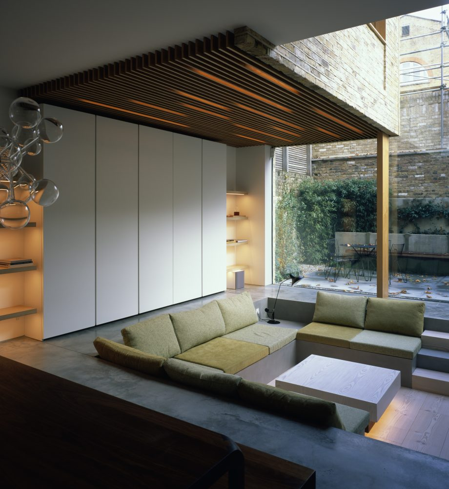
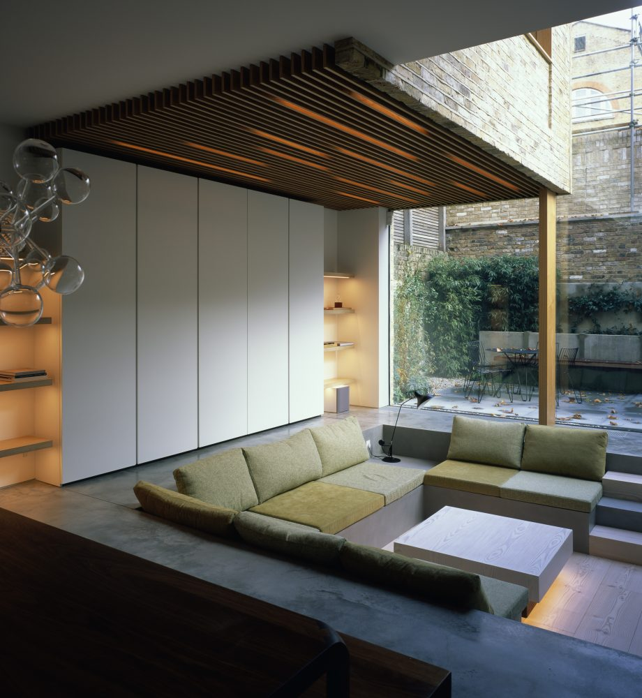

Our Bloomsbury based practice has been working in central London since 2006. Having worked within the oldest areas of London, we have developed an expertise in historic buildings. These are often Listed and situated within a Conservation Area. Our knowledge and experience consistently secure Planning Consents, Listed Building Consents and Great Estate Licenses.
Many areas within central London boroughs were originally developed by aristocratic families (examples being Grosvenor, Cadogan, De Walden, Portman and Bedford), and these family estates still own large swathes of, what is now commonly referred to as, Prime Central London. These Great Estates maintain significant influence either through direct ownership or through various stewardship schemes, an example being the Belgrave Estate Management Scheme administered by Grosvenor. Schemes such as this enable the Estate to exert control over the use, development, and appearance of the designated area.
We have a growing body of new-build work in Prime Central London and elsewhere the UK. Through sensitive, contextual design and iterative dialogue with Clients and Planners, Rodić Davidson have established a track record of obtaining difficult planning consents for both new-build and existing properties.
 Five Apartments, Kensington
Five Apartments, Kensington
 Queen Anne Apartment, Knightsbridge
Suffolk Farmstead
Queen Anne Apartment, Knightsbridge
Suffolk Farmstead
 Former Embassy, Kensington
Former Embassy, Kensington
We are Rodić Davidson, an award-winning architecture, design, and interiors studio with the belief that buildings are more than brick and mortar; they are an extension of ourselves and our environment. Our practice specializes in design-led and highly crafted renovations and new-builds. We pride ourselves on an ability to deliver thoughtful and imaginative design whilst safeguarding our clients’ commercial interests.
We are and RIBA Chartered Practice based in Bloomsbury, central London. Whilst much of our work is local to us in London, the practice has an expanding portfolio of work across the UK; predominantly in the east and southeast of England but also including projects reaching as far as Scotland. We have experience working in rural locations, particularly in Norfolk, Suffolk, Kent and Sussex where we have undertaken a number of farmstead and country house projects, for both UK and overseas-based clients. These projects often involve sensitive restoration of listed buildings, usually with some more contemporary new-build additions. The practice seeks to develop sensitive yet ambitious design solutions that celebrate heritage while recognizing that buildings are often now required to perform different functions and should consume less carbon in doing so. In striving for lower carbon design solutions, we look to insulate well and integrate renewable technologies wherever possible.
We offer complete design and management services with an objective to always strive to add value through design. Our work is often for forward-thinking owner-occupiers and developer clients, where we seek to build relationships founded on a personal service, creativity and shared ambition.
Our services include Architecture, Interior Design and Project Management. We have a record of obtaining hard-won Planning and Listed Building Permissions, working in strict legislative urban environments such as The Royal Borough of Kensington and Chelsea, London Borough of Camden, and City of Westminster. Outside of London we have experience working in National Parks, Areas of Outstanding Natural Beauty, Sites of Special Scientific Interest, Green Belt and other designated areas.
 Town House, Kensington

Sartor House, Chelsea
Town House, Kensington

Sartor House, Chelsea
Much of our work, specifically that in Prime Central London, involves the refurbishment, alteration and extension of houses and historic buildings that are often Listed. This is often referred to as Conservation Architecture. Rodić Davidson have experience at working with all grades of Listed Building: whether these be Grade 2, Grade 2* or Grade 1.
Our design response sometimes looks to introduce modern insertions into historic buildings, thereby providing visual separation between elements and allowing the historic fabric to be repaired using traditional methods and materials. This approach can result in clearly articulated functional spaces, allowing appreciation of the traditionally proportioned rooms and spaces but also combining new, larger spaces with clean crisp lines.
 Planning and listed building consents granted for demolition and new build house in the Royal Borough of Kensington and Chelsea
Planning and listed building consents granted for demolition and new build house in the Royal Borough of Kensington and Chelsea
 Mixed Use, Southwark
Mixed Use, Southwark
Our practice has forged strong and trusted relationships with a wide range of associated professionals and consultants. It is these relationships which, in turn, contribute to the planning consents and project outcomes that we achieve for our clients. We believe in close engagement throughout the design process, particularly with Conservation and Design Officers. Our pro-active approach is guided by disciplined Project Management principles which seek to accurately establish a project programme at the outset and identify risk areas.
Our Conservation ServicesRodić Davidson Interiors (RDI) are our in-house team of talented and passionate interior designers. RDI works in close collaboration with Rodić Davidson Architects to provide a holistic design service to our clients. RDI has a growing number of high-end residential projects, including the renovation of a private property in Notting Hill and a contemporary new build house in Chelsea.
Our Service is bespoke and tailored to the client and project requirements. We can provide detailed FF&E specifications and schedules. We can also design and produce bespoke furniture using our partnerships with skilled artisans and manufacturing companies. We have beneficial trade accounts with top suppliers and transparently pass on discounted pricing to our clients. We produce detailed drawings and coordination packages, regularly working alongside other client-appointed design consultants.
 Market Square, Reading
Market Square, Reading
 Former Artist’s Studio #2, Chelsea
Former Artist’s Studio #2, Chelsea
 North Vat, Dungeness
North Vat, Dungeness
 Garden Square Apartment, Kensington
Garden Square Apartment, Kensington
 Corner Cottage, Wimbledon
New-Build Apartments Under Construction in Kensington
Corner Cottage, Wimbledon
New-Build Apartments Under Construction in Kensington
Rodić Davidson is always interested in new potential projects of any scale. We offer a bespoke approach, guided by an expertise in central London planning policy and historic buildings. One of our team would love to hear about your property and discuss how we can help.
You can call our studio to enquire or email us at enquiries@rodicdavidson.co.uk
Architecture
+44 (0)20 7043 3551
Interiors
+44 (0)20 7043 3552